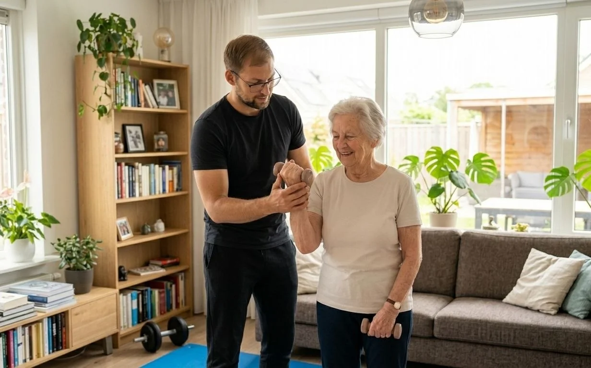
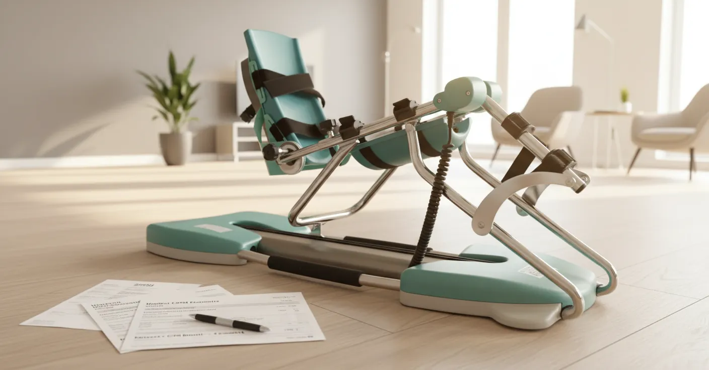
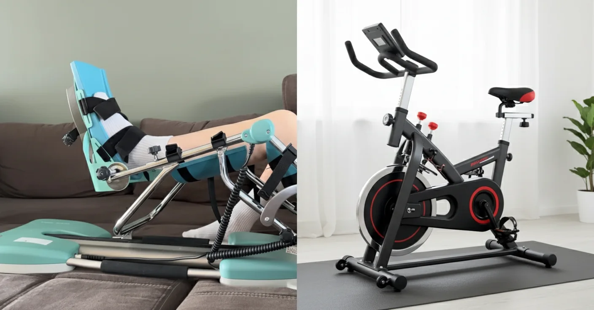
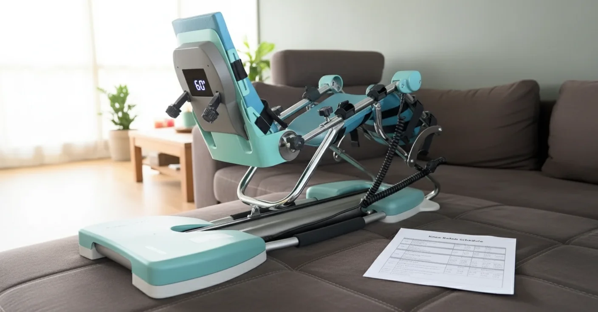
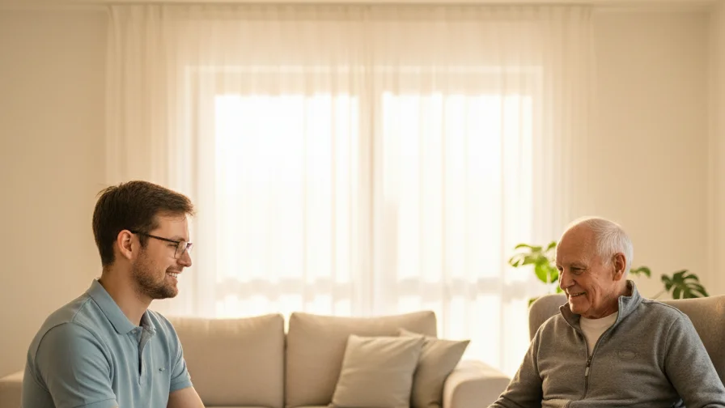
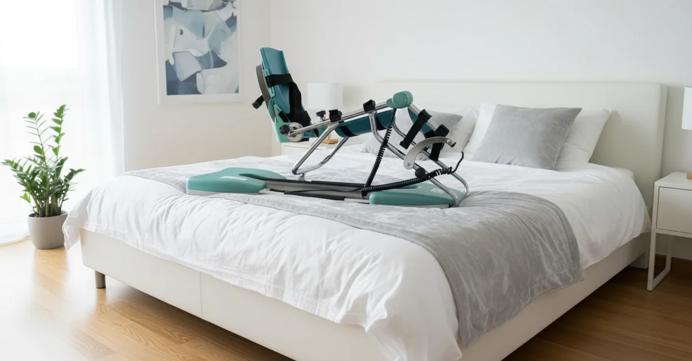
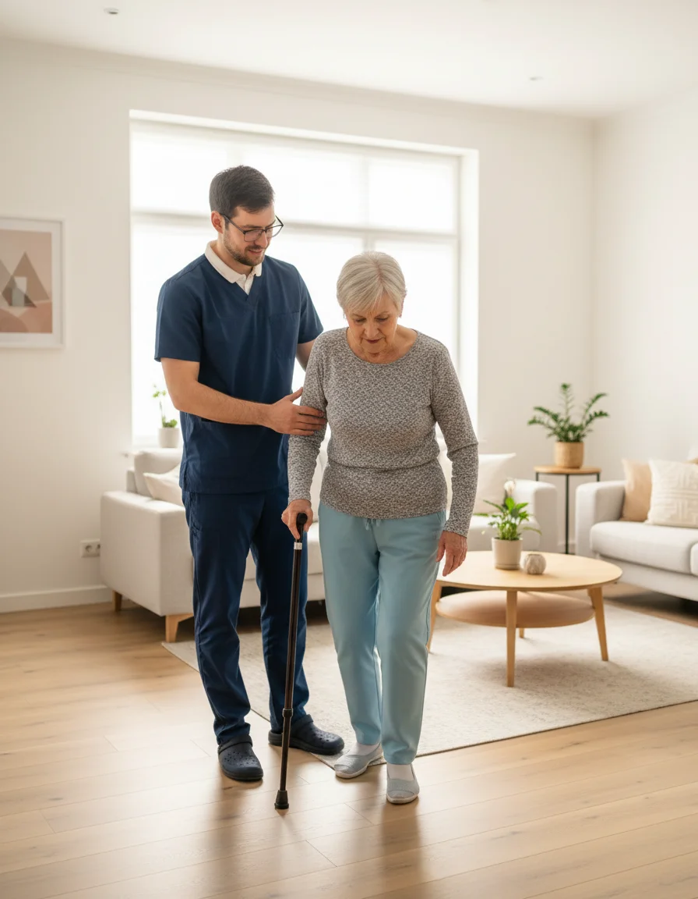

Filter op onderwerp

5 Voordelen van Kinesitherapie aan Huis vs Praktijkbezoek
Ontdek waarom steeds meer patiënten kiezen voor kinesitherapie in de vertrouwde thuisomgeving. Van comfort tot betere resultaten - lees alle voordelen.
Geen artikelen gevonden voor dit onderwerp.

Krachtverlies en Ouder Worden: Wat U Moet Weten
Spierverlies op latere leeftijd is normaal — maar ook beïnvloedbaar. Lees hoe kinesitherapie u helpt sterk en zelfstandig te blijven.

Kinetec CPM Machine: Complete Gids voor Knie-revalidatie Thuis
Alles over Kinetec CPM machines voor knie-revalidatie. Instructies, voordelen en huur mogelijkheden.

Postoperatieve Knie-revalidatie: Wat Verwachten en Hoe Te Versnellen
Complete gids voor herstel na knie operatie. Tijdslijn, oefeningen en tips voor optimaal herstel.

Revalidatie na Knieprothese: Tijdlijn & Tips
Week-per-week herstel na knieprothese. Wanneer Kinetec, hometrainer en oefeningen starten. Praktische tijdlijn.

Revalidatie na Heupprothese: Wat Verwachten?
Volledig overzicht van herstel na heupoperatie. Verschil met knie, gangrevalidatie en thuisoefeningen.

Kinesitherapie aan Huis Nodig? 7 Situaties
Wanneer is kinesitherapie aan huis de beste keuze? 7 situaties waarin thuisbehandeling ideaal is.

Actieve vs Passieve Revalidatie: Wat is Best?
Uitleg over het verschil tussen actieve en passieve revalidatie. Waarom u beide nodig heeft voor optimaal herstel.

Rugpijn Behandelen aan Huis: Wanneer Kinesist?
Rugpijn? Ontdek veelvoorkomende oorzaken, wanneer u hulp moet zoeken en hoe kinesitherapie aan huis helpt.

Kinetec Terugbetaling Verzekering: Wat Wordt Vergoed?
Hoe werkt de terugbetaling van Kinetec verhuur via uw verzekering? Welke documenten hebt u nodig?
Kinetec na Kruisbandoperatie: Sneller Herstellen
Hoe een Kinetec CPM machine helpt bij revalidatie na een kruisbandoperatie. Tijdlijn en praktische tips.

Kinetec of Hometrainer na Knieoperatie?
Kinetec of hometrainer: welke kiest u na een knieoperatie? Vergelijking, tijdlijn en de ideale combinatie.

Kinetec Gebruiksschema: Hoeveel Graden Per Dag?
Duidelijk week-per-week schema met graden, sessieduur en aantal sessies per dag voor uw kinetec.
Valangst bij Ouderen Overwinnen: Oefeningen & Tips
30-50% van ouderen heeft valangst. Ontdek 5 effectieve oefeningen en praktische tips om uw zelfvertrouwen terug te winnen.

Herstel na Knieprothese Week per Week
Eerlijke tijdlijn: wat kunt u verwachten qua pijn, zwelling en mobiliteit na een knieprothese?
Verboden Bewegingen na een Heupprothese
Wat mag wel en niet na een heupoperatie? Overzicht per operatietechniek met praktische dagelijkse tips.

Kinetec na Meniscusoperatie: Sneller Herstel met CPM
Hoe een kinetec uw knieherstel na een meniscusoperatie versnelt. Verschil hechting vs. meniscectomie, tijdlijn en tips.

Neurologische Kinesitherapie aan Huis: Beroerte, Parkinson & MS
Professionele neurologische thuisrevalidatie: wat u kunt verwachten bij herstel na een beroerte, Parkinson of MS.

Hoe Lang Kinetec Huren? Wanneer Mag U Stoppen?
Optimale huurduur per type knieoperatie en de 5 signalen dat u klaar bent om te stoppen met de CPM machine.
Revalidatie na Schouderoperatie: Kinesitherapie aan Huis
Tijdlijn, oefeningen en do's & don'ts voor optimaal schouderherstel. Waarom thuisbehandeling ideaal is na een schouderingreep.